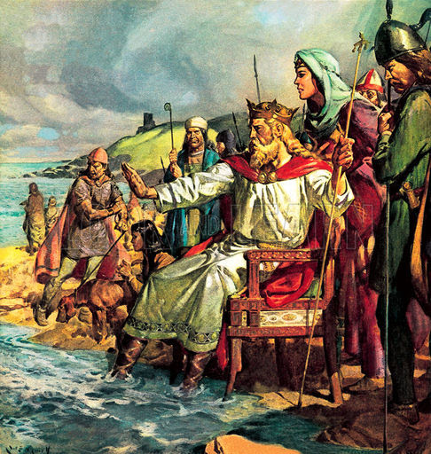

„Hoće li tko za mnom, neka se odreče samoga sebe, neka uzme svoj križ i neka ide za mnom.” (Mt 16,24)

Knut IV., rođen oko 1042. godine, bio je ambiciozan i pobožan danski kralj koji je prijestolje preuzeo 1080. godine nakon smrti brata Haralda III. Njegovu vladavinu obilježili su snažni napori u kristijanizaciji Danske i jačanju autoriteta Crkve, kojoj je darovao velike posjede i nametnuo strogo poštivanje blagdana. Kroz te reforme nastojao je učvrstiti i vlastiti kraljevski položaj, istovremeno osnivajući važne obrazovne institucije poput škole pri katedrali u Lundu.
Kao vladar, Knut se sukobio s interesima aristokracije jer je pokušao ograničiti moć plemstva i natjerati ga na poštivanje kraljevskih zakona. Posebno se istaknuo nastojanjima da zaštiti obespravljene, poput robova, stranih trgovaca i klerika. Takva politika, zajedno s neuspjelim pokušajem osvajanja engleske krune, dovela je do pobune seljaka i plemića. Godine 1086. Knut je ubijen kopljem u crkvi svetog Albana u Odenseu, kamo se bio sklonio pred pobunjenicima.
Nakon njegove mučeničke smrti, loše žetve i izvještaji o čudima na njegovu grobu protumačeni su kao znakovi njegove svetosti i božanske kazne za ubojstvo kralja. Na molbu kralja Erika I., papa Paskal II. službeno ga je kanonizirao 1101. godine. Sveti Knut IV. postao je prvi kanonizirani Danac u povijesti te se i danas štuje kao zaštitnik Danske.